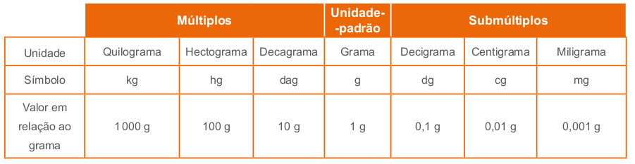
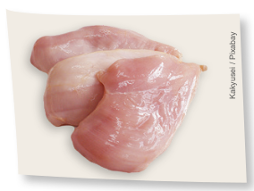
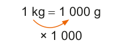
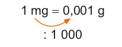
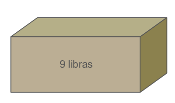

270
CAPÍTULO 5 - Medidas de massa
Massa de um corpo
Um prato típico do brasileiro é o arroz com feijão. Você já observou como esses alimentos são vendidos nos supermercados?

1. Troque ideias com um colega e escrevam, no caderno, qual a unidade usada para indicar a massa de cada um dos pacotes de arroz e feijão.
a) Escrevam o nome de outros produtos que podem ser comprados no mercado que também são vendidos em quilogramas.
b) Que outras unidades de massa vocês conhecem?
Massa é a quantidade de matéria que um corpo apresenta.
No Sistema Métrico Decimal a unidade-padrão para medir um corpo é o quilograma (kg), porém utilizamos o grama como unidade de referência para compor os múltiplos e submúltiplos.
Múltiplos e submúltiplos do grama
Como fazemos para medir uma pequena quantidade de massa? Utiliza- mos os submúltiplos do grama.
decigrama (dg)
centigrama (cg)
miligrama (mg)
271
Por exemplo, quando verificamos as informações nutricionais no rótulo de uma caixa de suco, observamos que algumas informações são dadas em miligramas.
E para medir grandes quantidades, o que fazemos? Usamos os múltiplos do grama. São eles:
decagrama (dg)
hectograma (hg)
quilograma (kg)
Por exemplo, carnes e peixes são vendidos por quilogramas.
Observe no quadro a seguir a representação dos submúltiplos e múltiplos em relação ao grama.
272
Assim, podemos estabelecer transformações entre as unidades de medida de massa fazendo multiplicações ou divisões sucessivas por 10, observe:
Agora, acompanhe as situações a seguir:
Situação 1
João comprou 0,75 kg de peito de frango. Quantos gramas ele comprou?
 Então:
0,75 kg = (0,75 ∙ 1 000) g = 750 g
Logo, João comprou 750 g de peito de frango.
Situação 2
Na composição do remédio que está tomando, Marina observou que em cada 1 mL há 200 mg de paracetamol. Quantos gramas de paracetamol há em cada 1 mL?
Então:
200 mg = (200 : 1 000) g = 0,2 g
Logo, em cada 1 mL, há 0,2 g de paracetamol.
Atenção!
A massa de um corpo é usualmente cha- mada de peso, porém não representam a mesma grandeza. O peso de um corpo depende da gravidade.
273
Na Terra e na Lua, a massa de um astronauta é a mesma. Já o seu peso é diferente. O peso de um astronauta na Lua equivale à sexta parte do seu peso na Terra, pois a gravidade da Lua é ⅙ da gravidade da Terra. Porém, é comum no cotidiano as pessoas dizerem: “Meu peso é de 68 kg”. O correto seria dizer: “Minha massa é de 68 kg”.
O instrumento utilizado para medir a massa de um corpo é a balança.
Observe alguns tipos de balanças:
Embora em muitas situações do cotidiano ser utilizada, na linguagem comum, a palavra “peso” se refere a “massa”.
ENCONTRE SOLUÇÕES
1. Pesquise quais produtos são comprados por:
a) miligramas;
b) gramas;
c) quilogramas.
2. Em seu caderno, expresse as medidas a seguir em gramas:
a) 46 kg
b) 1 200 mg
c) 0,098 kg
d) 75 mg
3. Lucas comprou 0,980 kg de batata. Quantos gramas de batata ele comprou?
4. Marta comprou 200 g de presunto cujo quilograma custa R$ 18,00. Quanto Marta gastou?
5. Carlos comprou 1,5 kg de frango, 750 g de linguiça e 2,8 kg de carne para churrasco. Quantos quilogramas, ao todo, Carlos comprou?
6. Comprei três quilogramas de carne a R$ 18,25 o quilograma. Ao dar ao caixa o dinheiro para pagar a conta, recebi de troco R$ 15,25. Quantos reais entreguei ao caixa?
274
7. (ENEM) Uma mãe recorreu à bula para verificar a dosagem de um remédio que precisava dar a seu filho. Na bula, recomendava-se a seguinte dosagem: 5 gotas para cada 2 kg de massa corporal a cada 8 horas. Se a mãe ministrou corretamente 30 gotas do remédio a seu filho a cada 8 horas, então a massa corporal dele é de
a) 12 kg
b) 16 kg
c) 24 kg
d) 36 kg
e) 75 kg
8. (UFTPR) Para metais e pedras preciosas, 1 quilate equivale a 200 mg. Assim, um anel com 12 brilhantes de 5 cg cada possui, em quilates:
a) 3
b) 5
c) 12
d) 15
e) 20
9. (Saresp) A libra é uma unidade de massa utilizada em alguns países, como Estados Unidos, e vale, aproximadamente, 0,45 quilogramas. Um pacote enviado por uma transportadora tinha seu peso indicado em libras.
O peso desse pacote é, aproximadamente,
a) 1,35 kg
b) 4,05 kg
c) 9,45 kg
d) 20 kg
10. (OBMEP) Aninha nasceu com 3,250 quilogramas. A figura mostra Aninha sendo pesada com um mês de idade. Quanto ela engordou, em gramas, em seu primeiro mês de vida?
a) 550
b) 650
c) 750
d) 850
e) 950
11. (OBMEP) Uma florista colheu 49 kg de flores do campo. O quilograma das flores pode ser vendido imediatamente a R$ 1,25 ou, mais tarde, com as flores desidratadas, a R$ 3,25. O processo de desidratação faz as flores perderem 5/7 de seu peso. Qual é o tipo de venda mais lucrativo para a florista?
12. (OBMEP) Uma panela pesa 645 g e uma outra 237 g. José divide 1 kg de carne entre as duas panelas, de modo que as duas, com seus conteúdos, ficam com o mesmo peso. Quanto de carne ele colocou em cada panela?